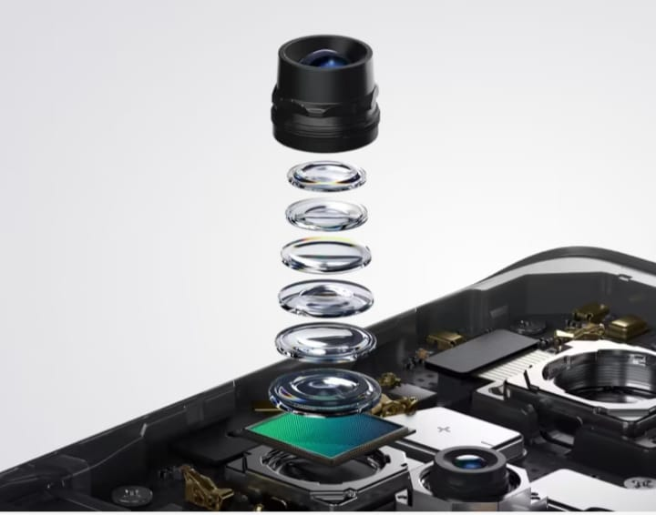

Crea con claridad
Sistema de cámaras para retratos ultraclaros
Toma fotos increíbles, ultranítidas y de calidad
profesional con el respaldo de
nuestro hardware flagship de imagen que dejará a todos sorprendidos.
64 MP
Cámara principal ultraclara
32 MP
Cámara teleobjetivo para retratos
con sensor Sony
112°
Cámara ultra gran angular
32 MP
Cámara para selfies ultranítidas

Toma retratos como un profesional
Cámara teleobjetivo para retratos
con sensor Sony de 32 MP
¿Listo para tomar retratos como un profesional? Nuestra cámara teleobjetivo de alta resolución es líder en la industria y está equipada con un sensor flagship Sony IMX709 que brinda distancias focales
profesionales y retratos ultranítidos en todo momento.
60%↑
35%↓
1X
2X
5X
Captura retratos profesionales fácilmente
Modo retrato profesional
Ajusta la apertura fácilmente para dar vida a fondos
hermosos y desenfocados con efecto bokeh, así como retratos de alta
calidad como los de una cámara réflex digital profesional.
Dale un toque profesional a tus retratos
Motor experto en retratos
Cámara teleobjetivo para retratos
El Motor experto en retratos se
desarrolló a partir de las distintas experiencias de
fotógrafos de retratos profesionales de todo el mundo.
Nuestra tecnología se adapta a tus preferencias culturales
en cinco procesos de optimización que abarcan rostros,
piel y fondos para brindar una experiencia inclusiva.
Diseñado para el máximo confort
Diseño 3D curvo
La cubierta trasera cuenta con una hermosa
curva en 3D que le da al teléfono
un aspecto elegante, así como un tacto suave y cómodo.
Poder en tu bolsillo
Cuerpo ligero
El rendimiento potente se fusiona
con una estructura ligera y delgada que cabe
fácilmente en el bolsillo y cuyo peso apenas se siente.
185 g
Peso aproximado3
7.99 mm
Grosor aproximado3
Azul Glacial
Colores premium
Un azul brillante y resplandeciente que cambia con la luz y que incorpora
OPPO Glow para brindar un aspecto cristalino y
gélido que es suave al tacto.
Gris Grafito
Colores premium
La sofisticación etérea y brillante de
la versión Gris Grafito cuenta con OPPO Glow, el cual se
combina con un acabado suave y aterciopelado que lo hace fácil de sostener.
Sumérgete en la fluidez
Pantalla curva
3D de 120Hz
Cámara teleobjetivo para retratos
Sumérgete de una pantalla sin bordes,
con tasa de refresco ultraalta de 120Hz que deleitará tu vista.
Disfruta de una experiencia visual
de primera clase y una gran sensación táctil al mismo tiempo.
120Hz
Tasa de refresco ultraalta4
1.07 mil millones
de colores
6.7"
Pantalla AMOLED5
93%
Ratio de pantalla5
HDR 10+
Certificación
Poder profesional en rendimiento
Disfruta de un rendimiento profesional
Plataforma móvil MediaTek
Dimensity 5G9
Reno10 5G incorpora el increíble
SoC MediaTek Dimensity 7050 de 6 nm que te
ayudará a stremear con fluidez y cambiar
fácilmente de una app a otra a gran velocidad.
Todo ello sin quedarte sin memoria.
256 GB
ROM
8 GB + 8 GB de RAM ampliada10
Velocidad y resistencia
Carga rápida 67W SUPERVOOCTM
Carga el 31% de la batería en solo
10 minutos con la carga rápida 67W SUPERVOOCTM6,
respaldada por una batería de 5000 mAh y
motor de salud de la batería que aumenta su durabilidad hasta 4 años.
5000 mAh
Batería7
4 años
Duración de la batería8
Vida en estéreo
Bocinas estéreo duales
Disfruta al máximo tus canciones
con el sonido envolvente de las bocinas estéreo duales.
Fluidez fabulosa
Motor de cómputo dinámico
OPPO desarrolló una solución a
nivel de sistema que mejora la fluidez y
estabilidad del sistema para que tu teléfono
se mantenga superrápido incluso tras 48 meses de uso.
Poder profesional en ColorOS 13
Mejor conectados
Conexión multipantalla12
Disfruta de una experiencia
conectada entre tu PC y teléfono.
La Conexión multipantalla te permite
llevar notificaciones, aplicaciones y
archivos a diferentes dispositivos,
así como compartir screencasts.
Tu hogar en tu teléfono
Control remoto infrarrojo
Controla tu hogar
inteligente desde tu smartphone.
El control remoto por infrarrojos
te permite controlar la mayoría de
tus electrodomésticos inteligentes desde un solo lugar.
Funcionalidad al alcance de tus dedos
Pantalla siempre activa inteligente13
Rastrea tu comida,
salta una canción o elige una nueva
lista de reproducción, todo ello sin
desbloquear el teléfono. La pantalla siempre
activa te da acceso instantáneo a las funciones que más te importan.
Comparte solo lo necesario
Autopixelar14
Protección de la privacidad con un clic.
Pixela automáticamente las fotos de perfil y nombres de las capturas
de pantalla para compartir tus capturas sin preocupaciones.